Statistical Analysis
Lab 5: Normal Distribution & R Functions
![]()
Intro
Overview
Today, we’ll learn how to:
- Use
rnormto generate random samples from a normal distribution - Use
pnormto compute cumulative probabilities (CDF) - Use
qnormto find quantiles (inverse CDF) - Use
dnormto compute probability densities (PDF) - Compare normal vs. non-normal distributions using real data
Creating a New Quarto Document
Open a new Quarto document. Select all text (Ctrl+A / Cmd+A), delete, then paste:
---
title: "Lab 5"
author: "Your Name"
date: today
format:
html:
toc: true
number-sections: true
colorlinks: true
smooth-scroll: true
embed-resources: true
---Render the document and save it under “week5” in your “stats” folder.
Background
Loading Libraries
There are four functions in R related to normal distributions: rnorm, pnorm, qnorm, dnorm.
rnorm: Generating Random Samples
rnorm
What Does It Do?
rnorm(n, mean, sd) generates n random numbers from a normal distribution with mean \(\mu\) and standard deviation \(\sigma\).
We will simulate women’s heights (cm) using three sample sizes.
Sample of 20 Observations
Generating the Data
Sample of 20 Observations
Plotting the Histogram
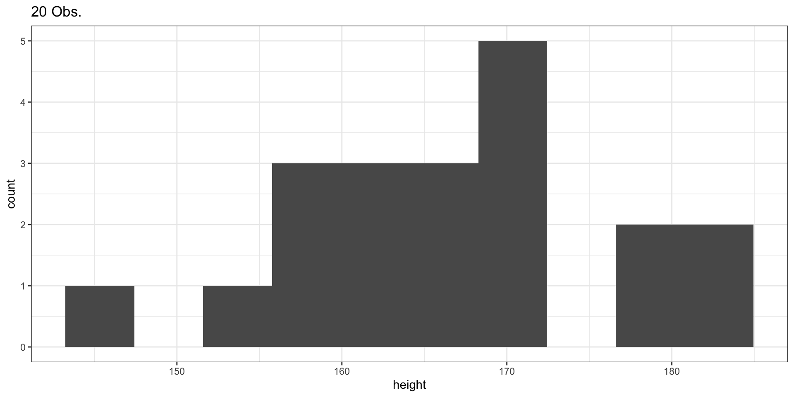
Sample of 100 Observations
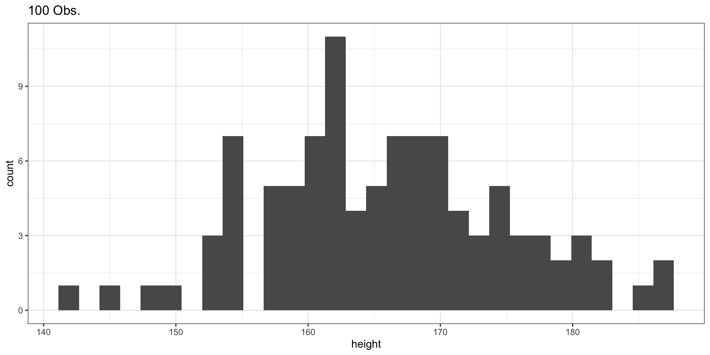
Sample of 1000 Observations
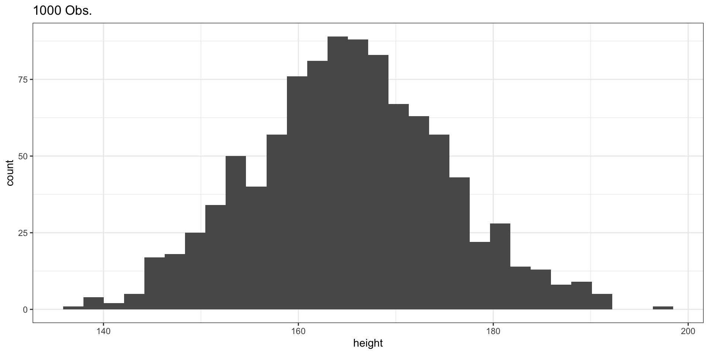
Comparing the Three Samples
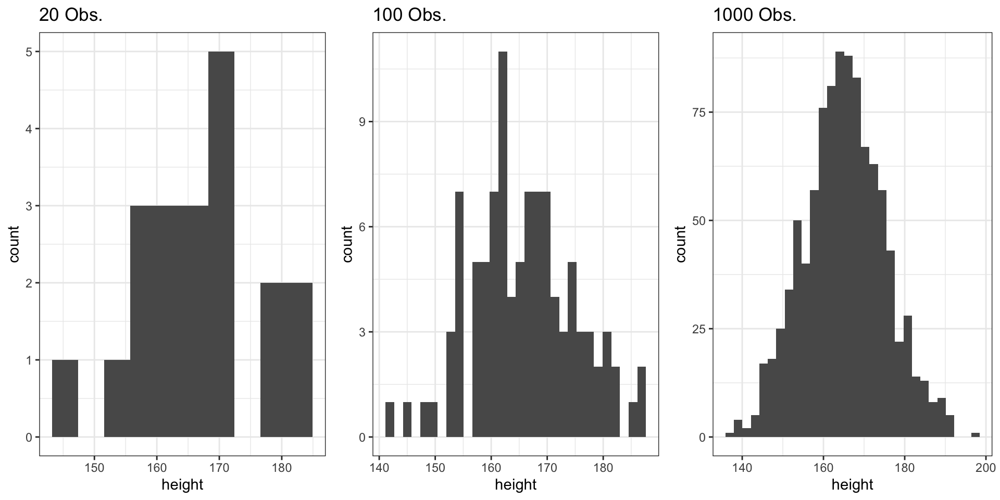
- Small samples (n = 20): More variability, less smooth
- Large samples (n = 1000): Converges to theoretical normal distribution
- Law of Large Numbers: As n increases, the sample distribution approximates the population distribution
pnorm: Cumulative Distribution Function
pnorm
What Does It Do?
pnorm(x, mean, sd) returns the probability that a normally distributed variable \(X\) takes a value \(\leq x\):
\[F_X(x) = P(X \leq x)\]
We will use heights of women from 135 to 195 cm.
Heights of Women: CDF
Setting Up the Data
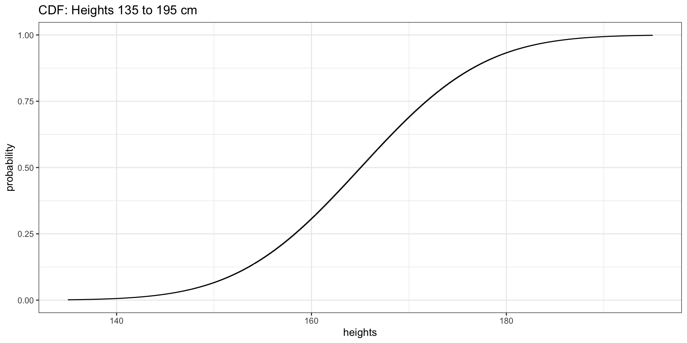
Highlighting Probabilities
P(Height \(\leq\) 150)
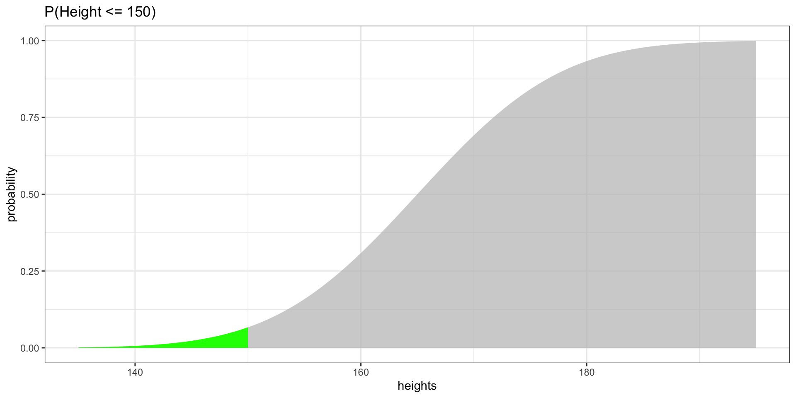
Highlighting Probabilities
P(Height \(\leq\) 170)
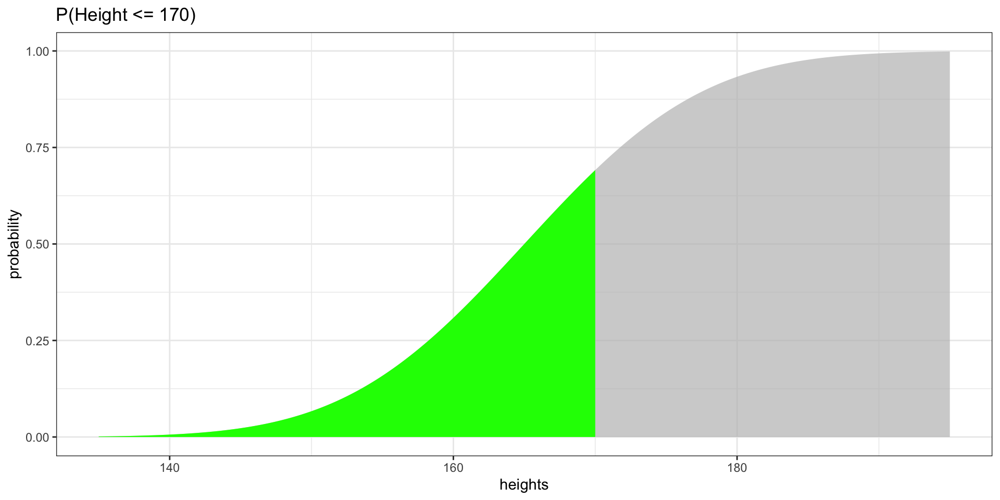
Effect of Increment Size
How Granularity Affects the CDF Shape
Show Code
df_01 <- data.frame(heights = seq(135, 195, by = 0.1),
probability = pnorm(seq(135, 195, by = 0.1), 165, 10))
df_1 <- data.frame(heights = seq(135, 195, by = 1),
probability = pnorm(seq(135, 195, by = 1), 165, 10))
df_10 <- data.frame(heights = seq(135, 195, by = 10),
probability = pnorm(seq(135, 195, by = 10), 165, 10))
fig_inc1 <- ggplot(df_01, aes(x = heights, y = probability)) +
geom_step() + theme_bw() + ggtitle("by = 0.1")
fig_inc2 <- ggplot(df_1, aes(x = heights, y = probability)) +
geom_step() + theme_bw() + ggtitle("by = 1")
fig_inc3 <- ggplot(df_10, aes(x = heights, y = probability)) +
geom_step() + theme_bw() + ggtitle("by = 10")
grid.arrange(fig_inc1, fig_inc2, fig_inc3, ncol = 3)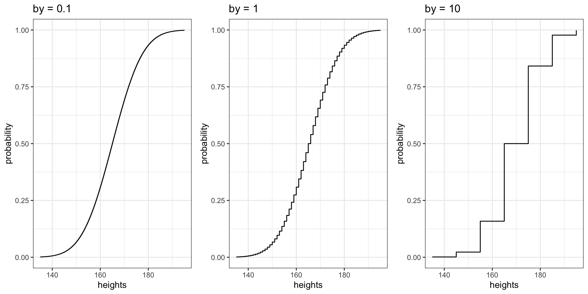
Smaller increments produce more data points, creating a smoother curve. With by = 10, the CDF is “jumpy.”
qnorm: Inverse CDF
qnorm
What Does It Do?
qnorm(p, mean, sd) returns the value \(x\) such that \(P(X \leq x) = p\).
It is the inverse of pnorm: given a probability, it returns the corresponding value.
Why is this useful? Whenever you need to find a cutoff value — “What height is at the 90th percentile?”, “What score do you need to be in the top 5%?” — you use qnorm.
qnorm in Action
Recovering Heights from Probabilities
Let us examine the CDF data we created previously:
qnorm in Action
Applying the Inverse
probability2 <- df_1$probability
dummy_df_q <- qnorm(probability2, mean = 165, sd = 10)
dummy_df_q2 <- data.frame(q = dummy_df_q, probability = probability2)
head(dummy_df_q2, n = 10)The q column recovers the original heights — qnorm reverses what pnorm did.
dnorm: Probability Density Function
dnorm
What Does It Do?
dnorm(x, mean, sd) returns the height of the bell curve at value \(x\).
This is the probability density — not a probability itself, but it tells you how concentrated observations are around a given value. Higher density = more likely to observe values nearby.
PDF for Heights
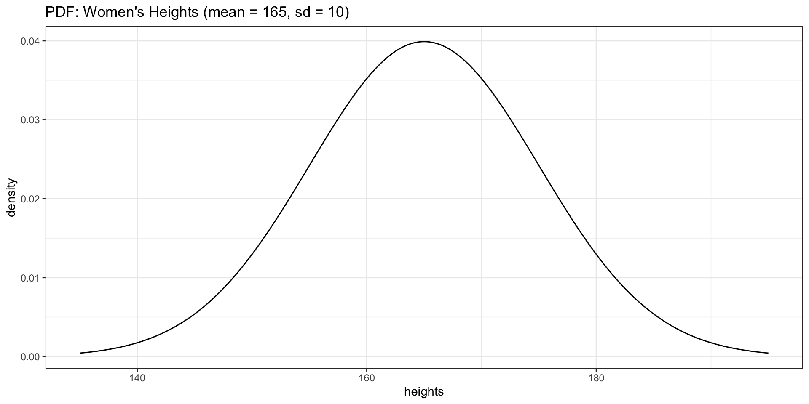
Overlaying the PDF on a Histogram
Connecting rnorm and dnorm
Show Code
ggplot(data = generated_heights_1000obs, aes(x = height)) +
geom_histogram(aes(y = after_stat(density)), bins = 30, fill = "grey80", color = "white") +
geom_line(data = dnorm_df2, aes(x = heights, y = density), color = "red", linewidth = 1) +
theme_bw() +
ggtitle("Histogram (1000 obs.) with Theoretical PDF Overlay")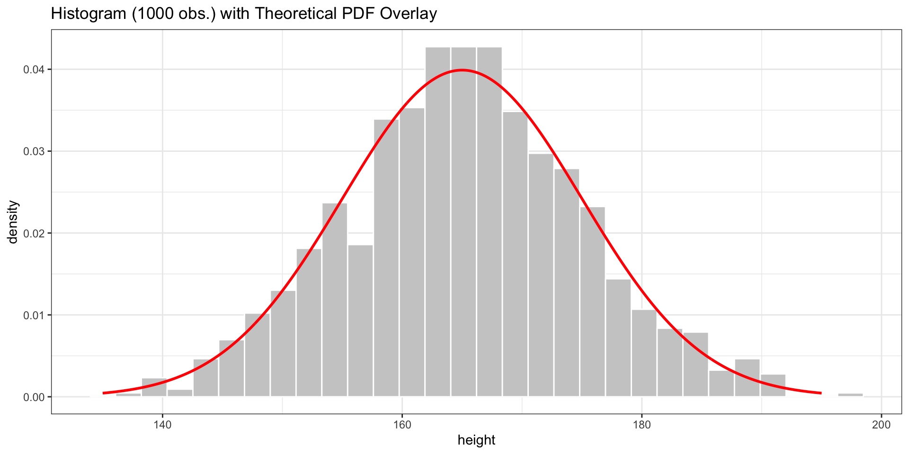
The red curve is the theoretical normal distribution. The histogram of our rnorm sample approximates it.
Normal vs. Non-Normal Distributions
Loading Life Expectancy Data
Working with Empirical Data
Cleaning the Data
Mean: 61.93 years | SD: 8.69 years
Histogram of Empirical Data
Show Code
lines <- paste("Mean:", round(mean_empirical, 0),
"\nSD:", round(sd_empirical, 2))
fig_hist1 <- ggplot(data = clean_life_exp_mean_df, aes(x = life_exp_mean)) +
geom_histogram() +
geom_density(aes(y = after_stat(count) * 1.5)) +
theme_bw() +
geom_vline(xintercept = mean_empirical, linetype = "dashed", col = "red") +
ggtitle("Life Expectancy\n(Empirical Data)") +
annotate("text", x = mean_empirical - 10, y = 17, label = lines, color = "red")
fig_hist1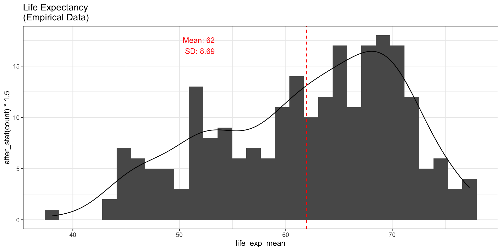
Generating Normal Data
Same Mean & SD, 235 Observations
fig_hist2 <- ggplot(data = generated_data, aes(x = life_exp_mean)) +
geom_histogram() +
geom_density(aes(y = after_stat(count) * 1.5)) +
theme_bw() +
geom_vline(xintercept = mean_empirical, linetype = "dashed", col = "red") +
ggtitle("Life Expectancy\n(Generated Normal)") +
annotate("text", x = mean_empirical - 12, y = 23, label = lines, color = "red") +
ylab("count")Comparing Empirical vs. Generated
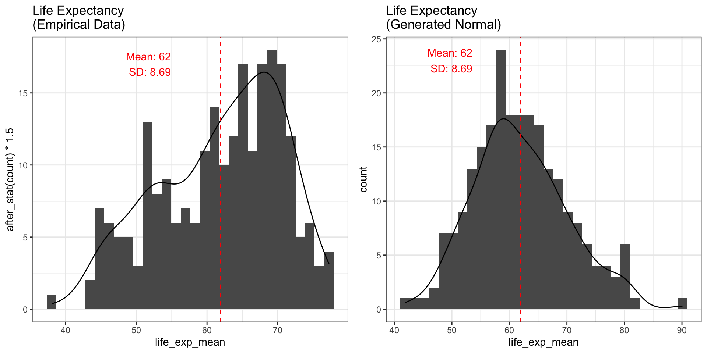
The empirical data is not normally distributed — it is left-skewed.
Generating More Observations
1000 Observations
Show Code
fig_hist3 <- ggplot(data = generated_data_1000obs, aes(x = life_exp_mean)) +
geom_histogram() +
geom_density(aes(y = after_stat(count) * 1.5)) +
theme_bw() +
geom_vline(xintercept = mean_empirical, linetype = "dashed", col = "red") +
ggtitle("Generated Normal\n(1000 Obs.)") +
annotate("text", x = mean_empirical - 10, y = 17, label = lines, color = "red")
fig_hist3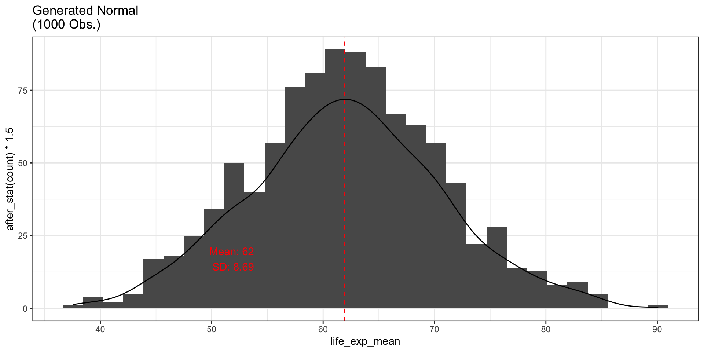
With more observations, the generated data looks increasingly like a bell curve.
Problems
Problem Setup
Let’s assume that life expectancy is normally distributed with:
- Mean (\(\mu\)): 61.93 years
- Standard deviation (\(\sigma\)): 8.69 years
Problem 1: Using pnorm
P(Life Expectancy \(\leq\) 50)
What is the probability that a randomly selected country has life expectancy \(\leq\) 50?
Problem 1 (cont.)
Using pnorm
If we assume a normal distribution, we can compute this directly:
Problem 1 (cont.)
Visualizing with CDF
Show Code
new_data2 <- life_expectancy_df2
new_data2$life_exp_mean_rounded <- round(new_data2$life_exp_mean, 0)
freq_table <- table(new_data2$life_exp_mean_rounded)
freq_table <- data.frame(freq_table)
names(freq_table) <- c("life_exp_mean_rounded", "count")
freq_table$life_exp_mean_rounded <- as.numeric(as.character(freq_table$life_exp_mean_rounded))
freq_table$sum_frequency <- sum(freq_table$count)
freq_table$pmf <- freq_table$count / freq_table$sum_frequency
new_data2$cdf <- ecdf(new_data2$life_exp_mean_rounded)(new_data2$life_exp_mean_rounded)
# Deduplicated datasets for clean plots
cdf_unique <- new_data2 %>%
distinct(life_exp_mean_rounded, .keep_all = TRUE) %>%
arrange(life_exp_mean_rounded)
pmf_unique <- freq_table %>%
select(life_exp_mean_rounded, pmf) %>%
arrange(life_exp_mean_rounded)
# PMF with highlighted region
fig_pmf <- ggplot(data = pmf_unique, aes(x = life_exp_mean_rounded, y = pmf)) +
geom_area(fill = "green") +
gghighlight(life_exp_mean_rounded <= 50) +
theme_bw() +
ggtitle("PMF: P(X <= 50)")
# CDF with highlighted region using step-function rectangles
ecdf_fn <- ecdf(new_data2$life_exp_mean_rounded)
cdf_plot <- data.frame(x = sort(unique(new_data2$life_exp_mean_rounded)))
cdf_plot$cdf <- ecdf_fn(cdf_plot$x)
cdf_sub <- subset(cdf_plot, x <= 50)
cdf_rects <- data.frame(
xmin = cdf_sub$x,
xmax = c(cdf_sub$x[-1], 50),
ymin = 0,
ymax = cdf_sub$cdf
)
fig_cdf <- ggplot() +
geom_step(data = cdf_plot, aes(x = x, y = cdf)) +
geom_rect(data = cdf_rects,
aes(xmin = xmin, xmax = xmax, ymin = ymin, ymax = ymax),
fill = "green", alpha = 0.5) +
theme_bw() +
ggtitle("CDF: P(X <= 50)")
grid.arrange(fig_pmf, fig_cdf, ncol = 2)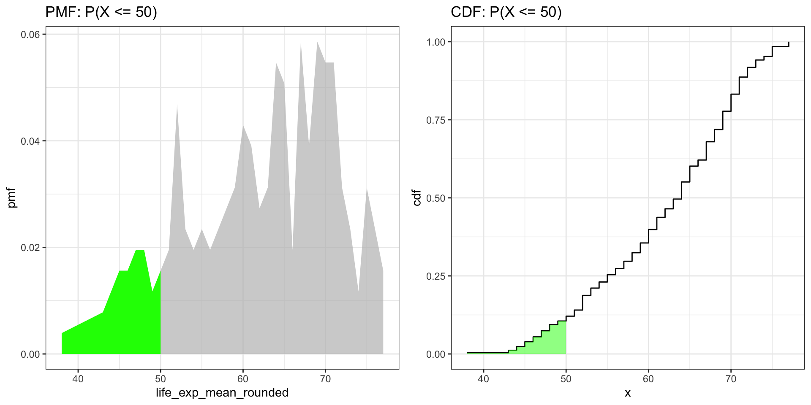
Problem 2: Using pnorm (complement)
P(Life Expectancy > 70)
What is the probability that a randomly selected country has life expectancy > 70?
Problem 2 (cont.)
Using pnorm
If we assume a normal distribution:
Problem 2 (cont.)
Visualizing P(X > 70)
Show Code
fig_cdf_full <- ggplot(data = cdf_plot, aes(x = x, y = cdf)) +
geom_step() +
theme_bw() +
ggtitle("Full CDF")
cdf_sub_70 <- subset(cdf_plot, x > 70)
cdf_rects_70 <- data.frame(
xmin = cdf_sub_70$x,
xmax = c(cdf_sub_70$x[-1], max(cdf_sub_70$x)),
ymin = 0,
ymax = cdf_sub_70$cdf
)
fig_cdf_70 <- ggplot() +
geom_step(data = cdf_plot, aes(x = x, y = cdf)) +
geom_rect(data = cdf_rects_70,
aes(xmin = xmin, xmax = xmax, ymin = ymin, ymax = ymax),
fill = "green", alpha = 0.5) +
theme_bw() +
ggtitle("CDF: P(X > 70)")
grid.arrange(fig_cdf_full, fig_cdf_70, ncol = 2)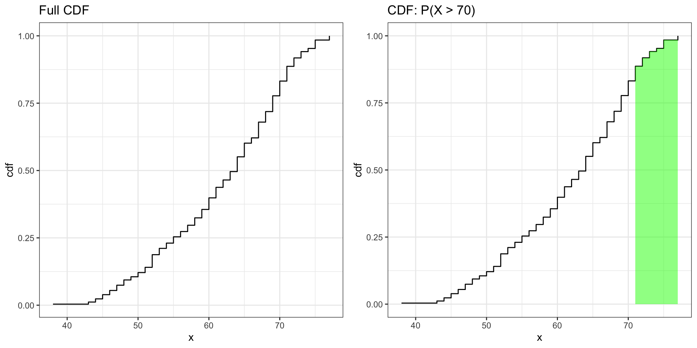
Problem 3: Using dnorm
Where Is Life Expectancy Most Concentrated?
Which value has a higher density — a life expectancy of 55 or 65?
d_55 <- dnorm(55, mean = mean_empirical, sd = sd_empirical)
d_65 <- dnorm(65, mean = mean_empirical, sd = sd_empirical)
data.frame(life_exp = c(55, 65), density = c(d_55, d_65)). . .
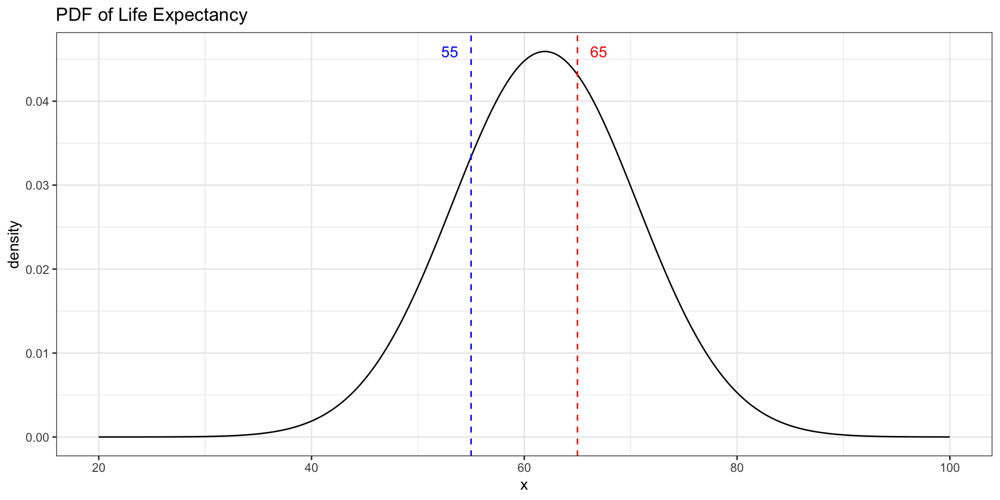
Problem 4: Using qnorm
90th Percentile of Life Expectancy
What life expectancy marks the top 10% of countries?
If we assume a normal distribution, we can use qnorm:
Conclusion
- The normal distribution can be fully described by its mean and standard deviation
pnormandqnormare inverses: probability \(\leftrightarrow\) valuednormtells you where observations are most concentrated — higher density near the mean, lower in the tails- Real-world data (life expectancy) is often skewed, but the normal approximation still gives useful answers
Popescu (JCU) Statistical Analysis Lab 5: Normal Distribution & R Functions